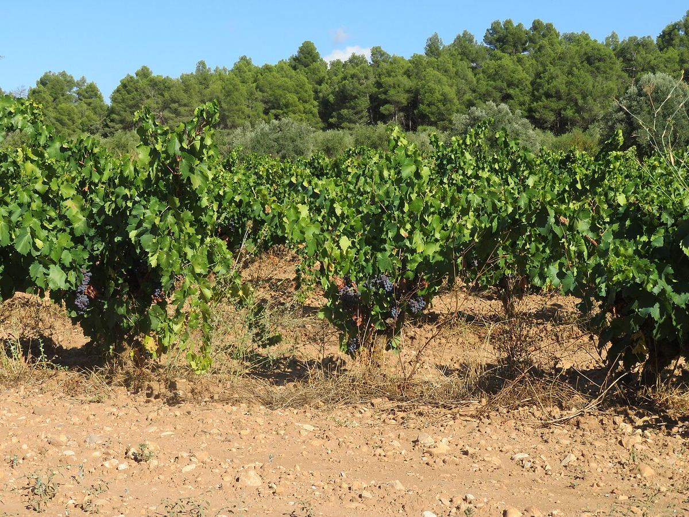

BIANCO
Terra Alta è una denominazione di origine dell'estremo ovest della provincia di Tarragona, attorno a Gandesa. È nota soprattutto per i bianchi di Garnacha Blanca, ma produce anche rossi di Garnacha e Carignano e vini rancio e dolci tradizionali.

La viticoltura nella Terra Alta ha una lunga tradizione, legata nel Medioevo agli ordini militari, come quello dei Templari, che possedevano terre nella zona. All'inizio del Novecento il movimento cooperativo promosse la costruzione di grandi cantine, tra cui quelle di Gandesa e di El Pinell de Brai, progettate dall'architetto Cèsar Martinell e note come «cattedrali del vino» per la loro architettura modernista. Nel 1938 la zona fu teatro della battaglia dell'Ebro, che lasciò un segno profondo nei suoi paesi. Per buona parte del Novecento la produzione fu destinata allo sfuso; negli ultimi decenni l'imbottigliamento in proprio e la scommessa sulla Garnacha Blanca hanno dato alla zona un'identità definita.
La denominazione occupa un altopiano elevato e accidentato all'estremità occidentale della Catalogna, al confine con l'Aragona, tra la valle dell'Ebro e le sierre di Pàndols e Cavalls. Comprende comuni come Gandesa, Batea, Corbera d'Ebre, Vilalba dels Arcs, Horta de Sant Joan ed El Pinell de Brai. Il clima è mediterraneo con una marcata influenza continentale: estati calde e secche, inverni freddi e precipitazioni scarse. Due venti caratterizzano la zona: il cierzo, secco e freddo, da nord-ovest, e il garbí, più umido, che arriva dal mare da sud e modera le temperature estive.
Predominano suoli calcarei, poveri di sostanza organica, di tessitura variabile, con zone argillose e altre più sabbiose. La loro scarsa fertilità, unita alla siccità estiva, limita le rese.
La Garnacha Blanca è il vitigno più rappresentativo della zona. Dà bianchi di medio o pieno corpo, con aromi di frutta bianca, fiori ed erbe mediterranee e una consistenza untuosa, adatti sia al consumo giovane sia alla fermentazione o all'affinamento in botte. Si coltivano anche Macabeo, Parellada, Moscato e Chardonnay. Tra i rossi spiccano Garnacha, Garnacha Peluda, Carignano, Tempranillo, Syrah, Cabernet Sauvignon e Merlot. Oltre a bianchi, rossi e rosati, la tradizione locale comprende vini rancio, ad affinamento ossidativo, e mistelle.
Il paesaggio della Terra Alta unisce vigneti, ulivi e mandorli su terreni ondulati circondati da sierre. Le cantine moderniste, i resti della guerra civile e i paesi di pietra fanno parte di un patrimonio ormai integrato nell'enoturismo della zona.